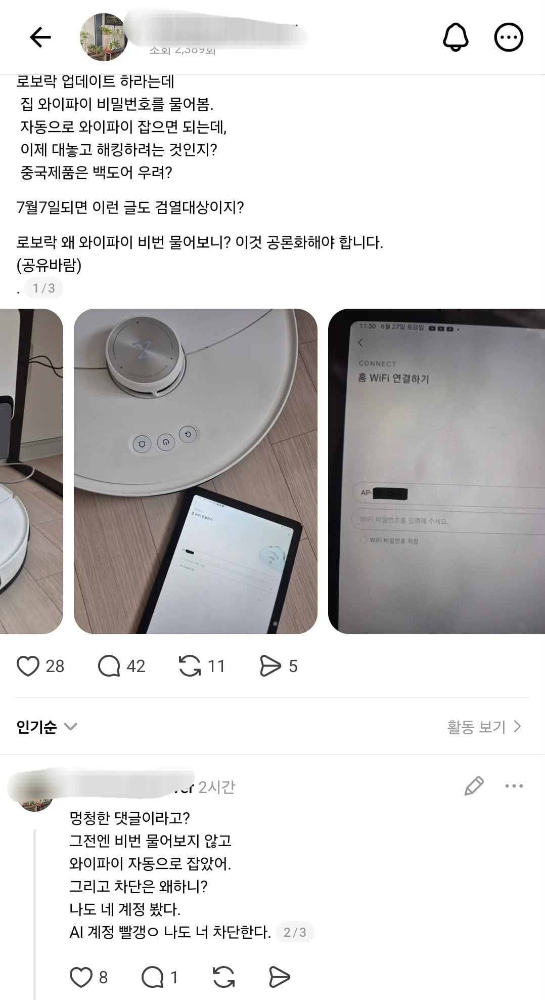

ㄷㄷㄷ

ㄷㄷㄷ
와이파이 다른집에서 비번 안걸어둔거 쓰던거 아님?

옛날엔 멍청하면 주변에서만 멍텅라단 소리 들엇는데 이젠 SNS에 자랑을 하니
이상하게 관련이 있단 말이지...
ㄹㅇ 왜 와이파이를 물어보냐 업데이트가 필요하면 출시할 때 업데이트할거 미리 다 예측해서 파일 넣어놨어야 할 거 아니야
그 iot같은거 핸드폰에 기기 연결 시키면 핸드폰에서 wifi정보 iot기기로 알아서 넘겨서
결과적으로 비번입력 없이 와이파이 등록 되는 구조도 존재하긴함
그런 구조만 쓰다보면 좀 의아할수도?
해킹걱정되면서 왜 중국산을 산겨
ㄹㅇ이네
의심의얼룩 같은거지 의심만 하고 시킬거 다 시키고 제일 의지하는
비번을안물어보고 진행하면 그게진짜해킹이지 ㅋㅋ
이야… 쟤네집은 그냥 문 안잠긴게 기본값이라 아무나 초인종도 안누르고 막 드나드나보네
저지능들은 SNS 못하게 제한해야한다
가끔 보면 병신들이 살아가기에도 세상은 너무 편리해...
히야ㅋㅋㅋ 뇌가 텅텅
짤이랑은 상관없지만 안드로이드 기반 iot기기들중에는 진짜로 해킹사례 꽤 있으니 조심해야됨
근데 로보락아니라 홈캠은 해킹 많이당하니까 조심해야되
로청 살 돈은 어떻게 벌은거냐..
로봇청소기가 더 똑똑할듯
멍청한새끼가 빨갱이드립치네 ㅋㅋ
아이고 미친 저런... 해킹 당하기전에 빨갱이 로봇 저한테 던지세요어서ㅜ
????: 로보락 해킹문제있는것같아서 중고로 팝니다......
"제가 살게요 계좌번호 불러주세요"
????: 그건 왜요...? 제 개인정보인데;
저런 빡대가리 집을 해킹해서 뭐하냐.......
인터넷 뱅킹도 못할 틀니인데
저 사람이 쓰기에 로봇청소기는 너무 최첨단 문물이다